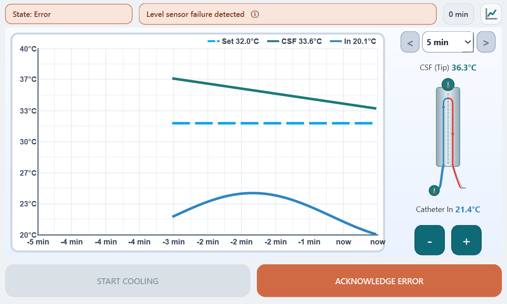
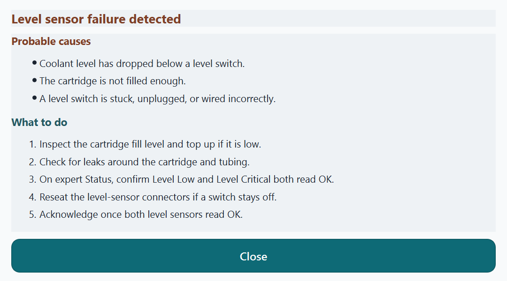
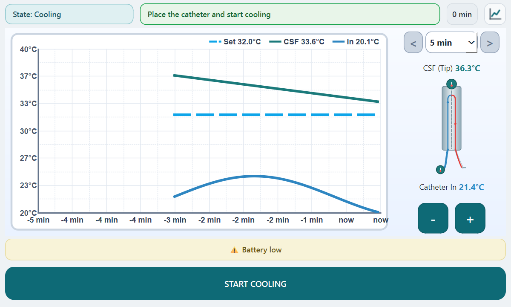
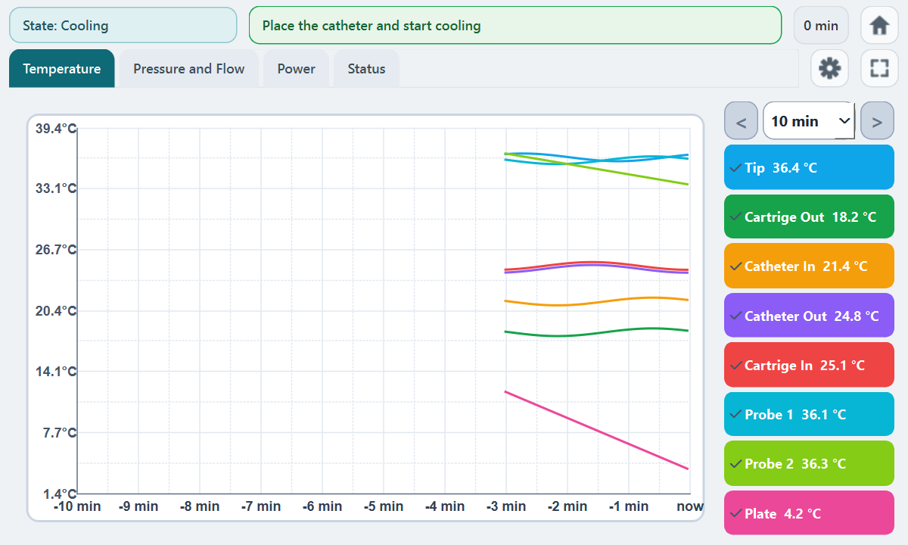
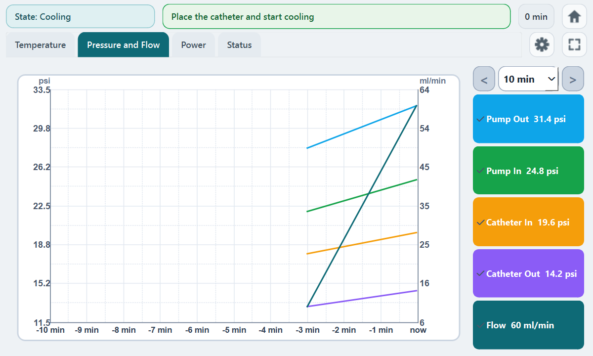
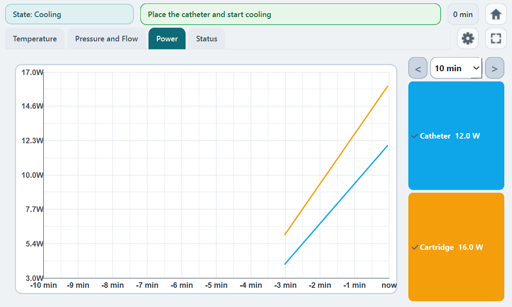
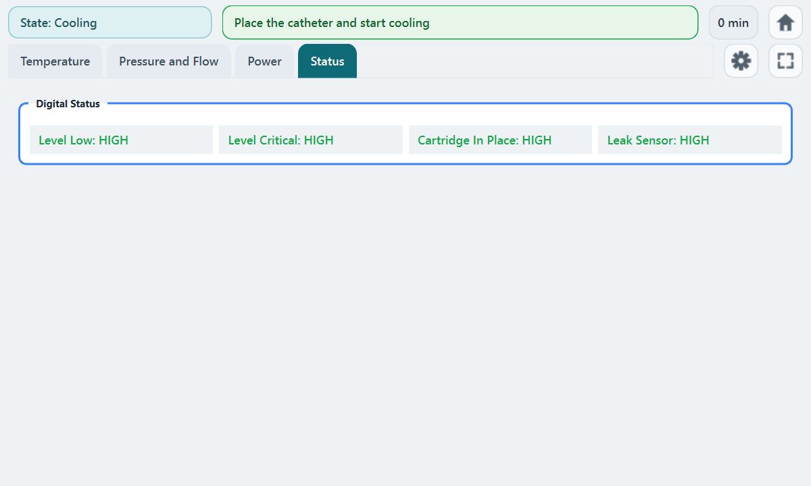
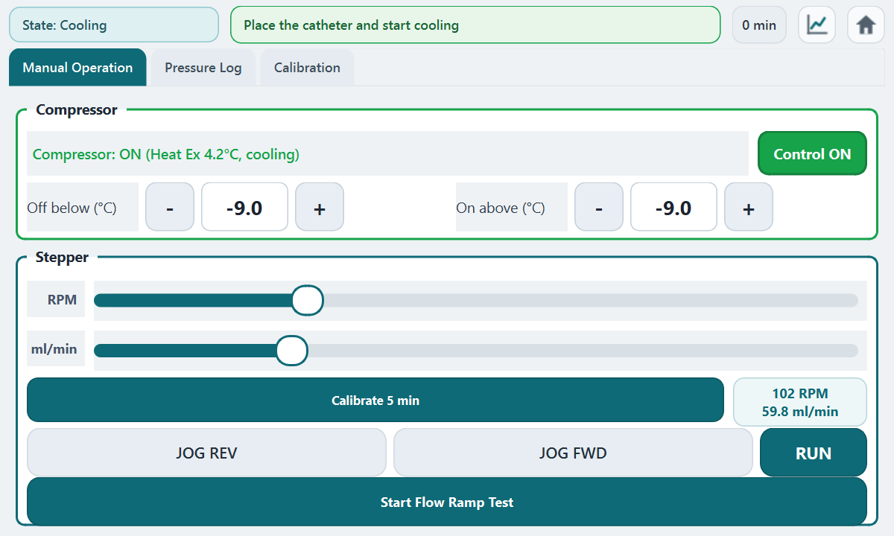
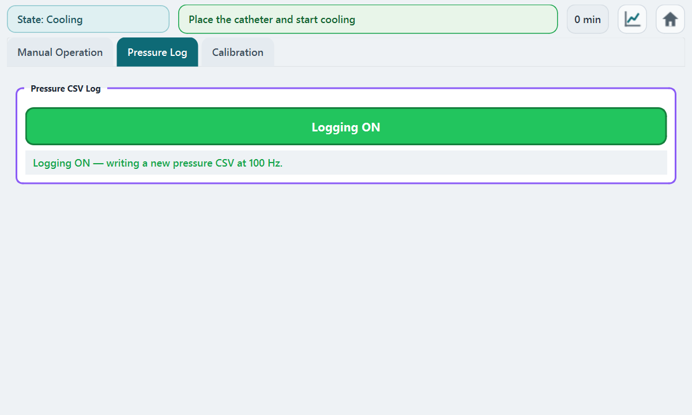
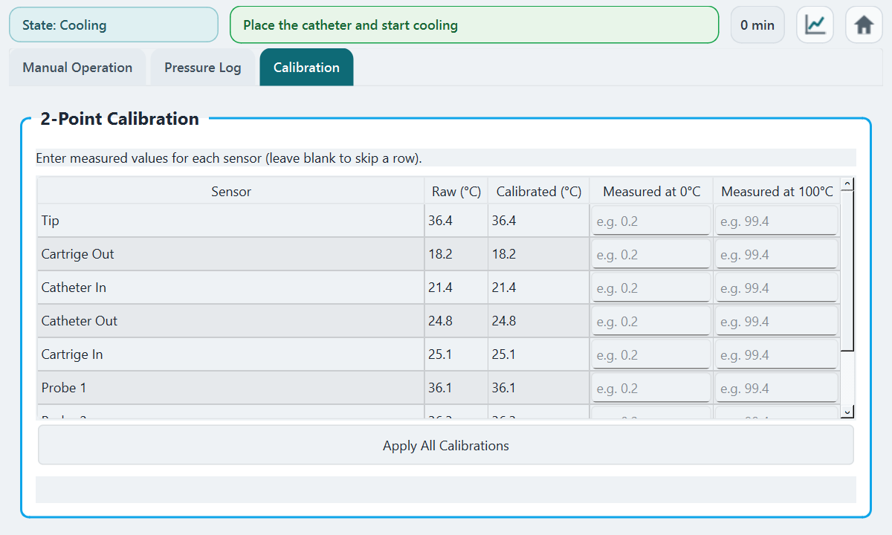

Operator guide
Revision A · 24 August 2026 · Spine Cooling Runtime
This guide explains how to run a treatment session on the Spine Cooling device. It is a brief operator reference for the prototype. It is not a certified instructions-for-use document and must not be used with a patient unless a later, released IFU says otherwise.
How to use it
- The device enters the state Cooling by itself. The compressor cools the plate.
- Seat the cartridge until Cartridge In Place is on. Fill until Level Low and Level Critical are OK.
- Place the catheter. Set the CSF target with the + and − buttons (30–35 °C).
- Press the START COOLING button. The pump runs toward the setpoint.
Watch the status bar at the top of the screen for the current state (Ready, Cooling, Pumping, or Error). START COOLING and STOP COOLING are buttons at the bottom of the main screen.
Screens
Main is the treatment page. Expert is monitoring. Service can move hardware and is one extra tap away on purpose.
Main screen — Ready

Main screen — Cooling

Main screen — Error

Error help

Main screen — warning

Expert — Temperature

Expert — Pressure and Flow

Expert — Power

Expert — Status

Service — Manual Operation

Service — Pressure Log

Service — Calibration

Error handling
A stop error changes the status bar to the state Error, stops the pump, and requires the ACKNOWLEDGE ERROR button after the cause is gone. Tap the error message for causes and steps. A warning only shows a yellow banner and does not change the state. If several stop errors are active, the highest-priority one is shown (sensor read failure, level, cartridge, fridge, leak, CSF low, heat exchanger, cooling ineffective).
| Message | When it appears | What to do |
|---|---|---|
| Level sensor failure detected STOP |
Cooling or Pumping, and a level switch is not OK. | Inspect the cartridge fill level and top up if it is low. Check for leaks around the cartridge and tubing. |
| Cartridge removed during operation STOP |
Cooling or Pumping, and the cartridge is not detected. | Fully seat the cartridge until it is locked in place. On expert Status, confirm Cartridge In Place is on. |
| CSF low temp STOP |
CSF (Tip) below the low-temperature limit (default 28 °C). | Check the CSF temperature on the main display. Raise the setpoint if it is below the intended target. |
| Sensor read failure STOP |
A sensor board or cable could not be read. | Check sensor board power and cables. Open expert Status and confirm readings update. |
| Battery low WARNING |
Reported battery below 20 %. | Connect mains power or replace/charge the battery. Confirm the power lead is fully seated. |
| USB stick not present WARNING |
USB logging is on and no SPINELOGS stick is inserted. | Insert a USB stick labeled SPINELOGS. Wait until Service → Manual Operation shows copying. |
| SD card storage below 1 GB WARNING |
Local logs have less than 1 GB free. | Copy logs off the device and delete old files. Do not start a long session until more than 1 GB is free. |
| USB stick storage below 1 GB WARNING |
The USB stick has less than 1 GB free. | Eject the stick, copy files off, and delete old logs. Reinsert a stick with more than 1 GB free. |
| Fridge defect STOP |
The compressor or fridge reports a defect. | On Manual Operation, check whether the compressor is running. Check the plate temperature. |
| Leak detected STOP |
The leak sensor stays wet. Detection can be switched off in configuration. | Do not restart cooling until the area is dry. Inspect the cartridge, catheter, and tubing for leaks. |
| Heat exchanger too cold STOP |
Plate below the heat-exchanger minimum (default −10 °C). | Check the plate temperature. Confirm the pump is circulating coolant. |
| Cooling ineffective STOP |
Pump and compressor on, but CSF does not drop enough within the timeout. | Confirm the catheter is placed and connected. Check pump speed, flow, and pressures on the expert page. |
Prototype — not a certified IFU.